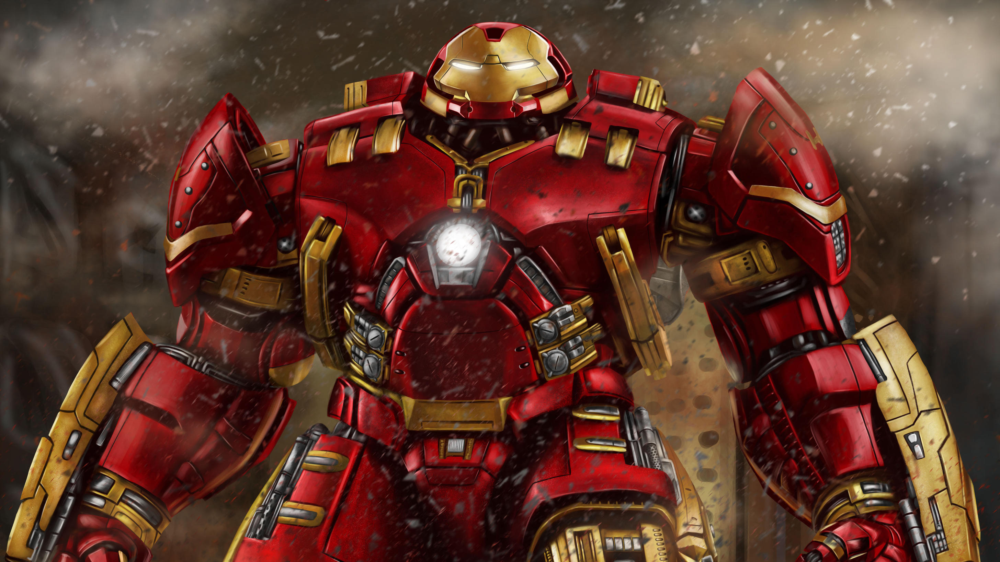
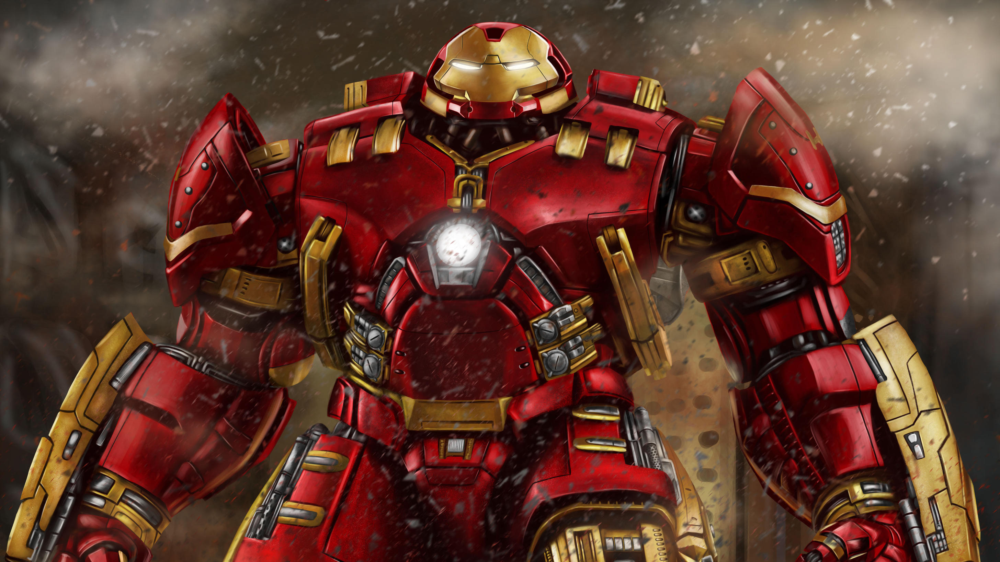

Homem de ferro
Homem de Ferro (Iron Man) é um personagem dos quadrinhos publicados pela Marvel Comics. Sua verdadeira identidade é o empresário e bilionário Tony Stark, que usa armaduras de alta tecnologia no combate ao crime. Foi criado em 1963 pelo escritor Stan Lee, o roteirista Larry Lieber e os desenhistas Jack Kirby e Don Heck. Stan Lee aceitou o desafio de fazer um personagem ser odiado e depois amado pelo público, criando um dos super-heróis mais marcantes de todos os tempos.
Infância
Tony Stark teve uma relação difícil com seu pai, sendo enviado aos seis anos de idade para um internato, onde ele iria em breve começar a experimentar a convivência com mais pessoas. Mesmo sendo uma criança no ensino médio, ele era considerado por muitos como um prodígio e gênio. Mais tarde, é revelado que Howard Stark, mesmo sendo uma boa pessoa, quando é vítima da fraqueza dos Starks (o álcool), se tornava um alcoólatra desprezível tanto verbalmente quanto abusivo com sua esposa e filho. Foi Howard quem forçou Tony a beber sua primeira bebida alcoólica. Howard tentou ensinar à Tony muitas lições, tais como os custos de fazer a guerra e que ele deve sempre limpar suas próprias mãos.
Morte de Howard e Maria Stark
Quando ele tinha 21 anos, os pais de Tony foram mortos em um acidente de carro e ele herdou os negócios de seu pai, As Indústrias Stark (Stark Industries). Dentro de alguns anos, ele transformou a empresa em um complexo de indústria multi-bilionária cujos contratos chefe eram para armamento avançado e munições para o governo dos EUA. Tony também comprou a empresa que construiu o carro que seus pais estavam dirigindo quando perderam suas vidas e a de falhas corrigidas em projetos de veículos da empresa, incluindo aqueles que envolviam sistemas de "freios".
O Nascimento do Homem de Ferro
Na versão original, durante a guerra do Vietnã, o inventor e empresário Tony Stark foi vítima de uma explosão de granada. Stark sobreviveu à explosão mas estilhaços do explosivo se alojaram próximo ao seu coração, ameaçando sua vida. Ele foi capturado e levado até o líder Wong Chu. Restavam apenas alguns dias de vida para o americano, e Wong Chu o forçou a criar uma poderosa arma.Tony não criou uma arma e sim algo que o mantivesse vivo e permitisse derrotar os captores. Preso com ele estava outro gênio, o professor Ho Yinsen. Stark revelou seu plano ao professor e Yinsen o ajudou. Quando os homens de Wong Chu se aproximaram, o velho professor pegou uma metralhadora, mas acabou sendo fuzilado, mas garantiu tempo suficiente para que Stark se recuperasse e se acostumasse a usar a armadura criada. O Homem de Ferro enfrentou os soldados e os derrotou. Sua armadura resistia aos disparos contra ele. Wong Chu tentou fugir e o Homem de Ferro incendiou o galpão de munições fazendo com que a explosão o matasse. Os prisioneiros foram libertados. Desde então Stark desenvolveu novas versões de sua armadura e adotou as cores vermelho e dourado como as padrões da armadura, com algumas pequenas alterações esporádicas como preto, prateado e, mais recentemente, branco. No começo de suas atuações, e para que ninguém desconfiasse, Stark espalhou o boato de que o Homem de Ferro era seu guarda-costas. Nas aventuras dos anos 70 e 80, era comum heróis, vilões e coadjuvantes do Universo Marvel se referirem ao Homem de Ferro como "o lacaio de armadura". Apenas seu motorista, Harold "Happy" Hogan, e sua secretária, Virginia "Pepper" Potts, sabiam da identidade secreta de Stark. No começo de suas atuações, e para que ninguém desconfiasse, Stark espalhou o boato de que o Homem de Ferro era seu guarda-costas. Nas aventuras dos anos 70 e 80, era comum heróis, vilões e coadjuvantes do Universo Marvel se referirem ao Homem de Ferro como "o lacaio de armadura". Apenas seu motorista, Harold "Happy" Hogan, e sua secretária, Virginia "Pepper" Potts, sabiam da identidade secreta de Stark. Ainda na versão original, Tony Stark colaborava com as forças armadas americanas, desenvolvendo armas e máquinas com o objetivo de usá-las na Guerra Fria. Seus inimigos frequentes eram os comunistas (russos, asiáticos ou latino americanos: pessoas que defendiam o comunismo/socialismo). Enfrentavam o Homem de Ferro rivais tecnológicos como o Dínamo Vermelho (ou Escarlate) e o primeiro Homem de Titânio. Ou espiões especiais como a Viúva Negra e o Espião Mestre.
Armaduras
O Homem de Ferro possui uma armadura motorizada que lhe dá voo, força e durabilidade sobre-humanas e uma variedade de armas. Outras pessoas que eventualmente assumiram a identidade Homem de Ferro foram o parceiro de longa data e melhor amigo de Tony Stark, James Rhodes, e associados a Tony como Harold "Happy" Hogan, Eddie March e Michael O'Brien (brevemente). Os sistemas de armas do traje mudaram ao longo dos anos, mas as armas padrão do Homem de Ferro têm sido sempre os raios repulsores — disparadas a partir das palmas de suas luvas. Outras armas construídas em várias encarnações da armadura incluem o uni-feixe em seu peito, os feixes energéticos de pulso (que armazenam energia cinética ao longo do caminho, por isso quanto mais longe eles viajam são mais difícil de bater), um gerador eletromagnético de pulso e um escudo de energia que pode ser estendido até 360 graus. Outros recursos incluem a geração de um feixe congelante, a criação e a manipulação de campos magnéticos, um emissor de explosões sônicas e a projeção de hologramas com três dimensões. Além do modelo de uso geral que ele usa, Stark tem desenvolvido vários especializados para viagens espaciais, mergulho em alto mar, discrição e outros fins especiais. A armadura Hulkbuster é composta de add-ons projetados para melhorar sua resistência e sua durabilidade para conter o incrível Hulk. Mais tarde, Tony Stark projetou uma armadura contra o poderoso Thor, modelada no Destroyer, utilizando uma fonte de energia mística. Stark desenvolve um pacote de eletrônicos durante as guerras de armadura que, quando ligado a armaduras que utilizam tecnologias de Stark, vai queimar esses componentes, tornando o processo inútil. Este pacote é ineficaz em modelos posteriores. Enquanto ele é tipicamente associada com James Rhodes, a armadura Máquina de guerra começou como uma das armaduras especiais de Stark. Os modelos mais recentes da armadura de Stark, começando com o Extremis Armor, agora são armazenados nas partes ocas de ossos de Stark, e o implemento usado para controlá-lo é implantado em seu antebraço e conectado diretamente ao seu sistema nervoso central . O Extremis já foi removido e ele agora usa armaduras mais convencionais. Alguns armaduras ainda ter uma forma líquida, mas não são armazenados dentro do seu corpo. Sua Endo-Sym Armadura incorpora uma combinação dos smart-metal líquido com o simbionte Venom estrangeiro, psionicamente controlada por Stark. Pós-Guerras Secretas, Stark usa uma armadura mais simples que pode praticamente 'transformar' para outras armaduras ou armas.


 

O seguinte vídeo é o Rap do Homem de Ferro, produzido pelo 7 Minutoz. Ele pode ser uma maneira mais descontraída de resuimir os acontecimentos de Vingadores Ultimato realcionados ao Homem de ferro